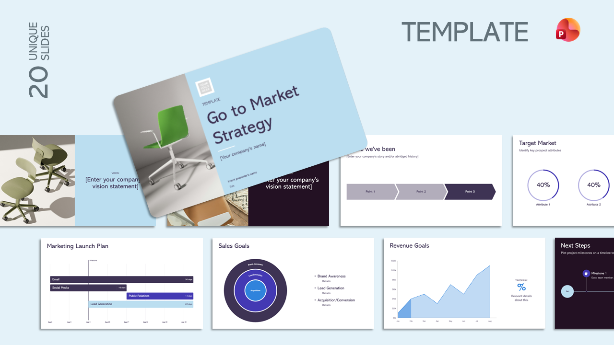

Go to Market Strategy
Present your Go To Market Strategy with clarity and professionalism using this Presentation Template.
ideal for startups, entrepreneurs, and business consultants, this presentation offer a structured
format to showcase business strategies effectively.


Market Positioning Strategy
Present your market positioning strategy with a clear and structured framework for defining target markets, competitive advantages, and unique value propositions.

Sales Performance Report
Present sales results, trends, and key performance insights with a clear and professional reporting framework.

Board Report
A professional presentation template designed for board meetings and executive reviews, enabling clear communication of business performance, strategic updates, key risks, financial results, and decision-making insights through concise and visually engaging slides.

Press Kit
Showcase your brand, company, or event with a professional and engaging press kit designed for media, investors, and stakeholders.

Product Launch Strategy
Present your product launch plan with a structured framework for market entry, customer engagement, and growth execution.

Product Prototyping
A modern presentation template designed to showcase product concepts, prototypes, user journeys, key features, development progress, and testing insights, helping teams communicate ideas effectively and accelerate innovation.

Marketing Report
A professional presentation template designed to present marketing performance, campaign results, audience insights, and key growth metrics, helping teams communicate impact, trends, and strategic recommendations with clarity and confidence.

Monthly Strategy Review
Present strategic performance, key initiatives, and business priorities with a clear and structured monthly review framework.

Market Research Analysis
A professional presentation template designed to present market trends, customer insights, competitor analysis, and industry findings, helping businesses make informed decisions and identify growth opportunities through clear, data-driven storytelling.
Market Research Analysis
A professional presentation template designed to present market trends, customer insights, competitor analysis, and industry findings, helping businesses make informed decisions and identify growth opportunities through clear, data-driven storytelling.